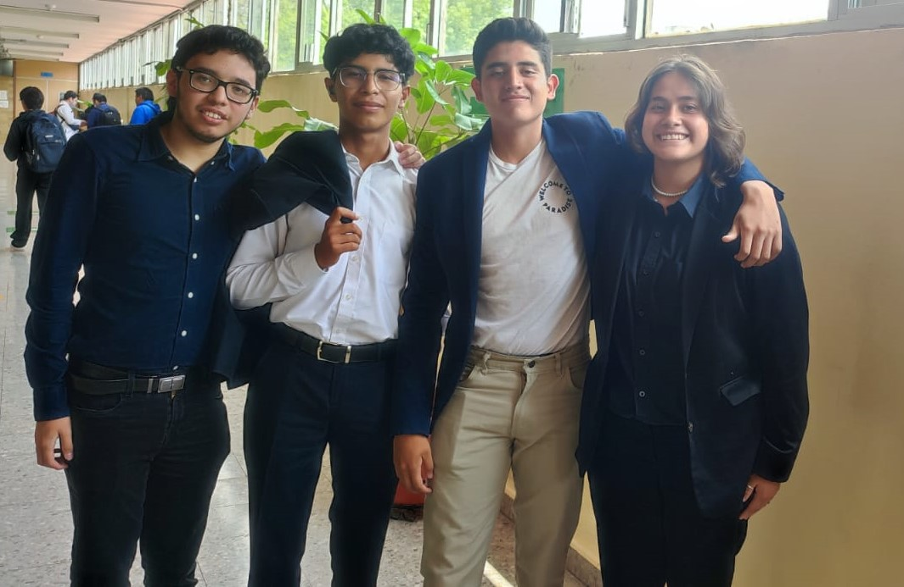

"¿Conoces qué es Kaizen? ¿Sabes quiénes somos? ¿Sabes lo que hacemos? Si respondió NO a una de estas preguntas, esta página es perfecta para ti."
¿Quiénes somos?
“Somos la mejora continua”
Kaizen, un equipo formado por cuatro apasionados estudiantes de programación del CECYT 9, que se
esfuerzan por marcar la diferencia en el mundo a través de proyectos con un impacto social
significativo. Nuestra dedicación a la programación no solo es evidente en nuestras habilidades
técnicas, sino también en nuestro compromiso con la mejora constante. Con un espíritu impulsado
por el Kaizen, la filosofía japonesa de la mejora continua, buscamos constantemente
oportunidades para crecer y superarnos.

Misión:
Somos una empresa que se enfoca en desarrollar apps móviles y aplicaciones web, siempre teniendo
un impacto en la sociedad. Nos dirigimos principalmente al sector de la educación y las
disyuntivas sociales. Lograremos esto mediante el esfuerzo y dedicación que le ponemos a cada
uno de nuestros programas.
Visión:
Ser una empresa reconocida nacionalmente por elaborar las mejores apps móviles y servicios web
con una calidad excepcional, esforzándonos lo mejor posible en nuestro trabajo para que con el
tiempo logremos ser una empresa perfectamente establecida en este medio.
Alan Leaños (Programador)
Administrador de Empresas de la Universidad de los Andes, con experiencia de 7 años en
análisis financiero de negocios bajo la perspectiva de valor; Rafael es un gran estratega
con grandes habilidades comunicativas y analíticas, lo cual hacen de él, un aliado
importante para los empresarios con decisiones de gran impacto para sus compañías. A lo
largo de su trayectoria profesional ha valorado empresas del sector de salud, hotelero, Real
Estate, automotriz, Retail, franquicias de comidas rápidas, tiendas de ropa, entre otras.
Rafael está liderando, junto con sus socios, la generación de alianzas estratégicas y
búsqueda de nuevos negocios y la consolidación de Binncorp como el Fondo de Capital Privado
No. 1 De Colombia en los próximos 10 años.
Daniel Mendoza (Analista y Programador)
Economista de la Universidad de los Andes, con Maestría en Finanzas de la misma. David cuenta
con sólidas bases y experiencia en finanzas corporativas y evaluación de proyectos. Ha
desarrollado y liderado análisis financieros bajo el modelo DFA; valoración de empresas por
diferentes métodos; proyección y valoración de activos; modelamiento y valoración de pasivos
(pólizas de seguros), desarrollo y liderazgo de estrategia financiera buscando maximizar
rentabilidad y mitigar riesgos de liquidez y re-inversión buscando la mayor rentabilidad
posible para los accionistas, re-inversión y duración. David ha sido miembro de Juntas
Directivas de las inversiones estratégicas de Axa Colpatria, asesorando a la gerencia en
toma de decisiones de alto impacto.
Jessica Leal (Analista y Diseñadora)
MBA de NYU y Universidad de Palermo de Argentina, profesional en Finanzas y Relaciones
Internacionales de la Universidad Externado de Colombia; Alejandro está altamente capacitado
para trabajar en áreas de finanzas estructuradas en sector público y financiero, siendo este
último su área de mayor experiencia al trabajar durante 10 años en el sector bancario
colombiano. También ha trabajado acompañando y asesorando la estructuración de proyectos de
Asociaciones Público Privadas para la Gobernación de Cundinamarca, definiendo la
rentabilidad, beneficios económicos para la Instititución, liderando el equipo y
desarrollando mecanismos para hacer más eficiente la gestión del mismo.
Ulises Perez (Analista y Diseñador)
MBA de NYU y Universidad de Palermo de Argentina, profesional en Finanzas y Relaciones
Internacionales de la Universidad Externado de Colombia; Alejandro está altamente capacitado
para trabajar en áreas de finanzas estructuradas en sector público y financiero, siendo este
último su área de mayor experiencia al trabajar durante 10 años en el sector bancario
colombiano. También ha trabajado acompañando y asesorando la estructuración de proyectos de
Asociaciones Público Privadas para la Gobernación de Cundinamarca, definiendo la
rentabilidad, beneficios económicos para la Instititución, liderando el equipo y
desarrollando mecanismos para hacer más eficiente la gestión del mismo.